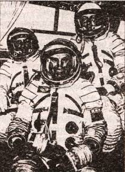
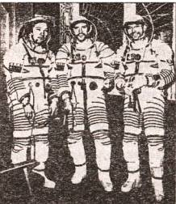
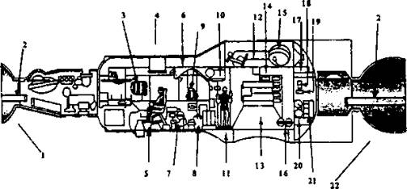
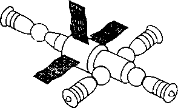

Настоящие «Салюты»
Общегражданской программе создания и эксплуатации орбитальных станций ДОС (или «Салют») повезло несравненно больше. Первая станция была запущена 19 апреля 1971 года. Так началась эпоха орбитальных станций серии «Салют», продлившаяся до весны 1986 года, когда космонавты Леонид Кизим и Владимир Соловьев поставили «Салют-7» на консервацию, после чего перебрались на новую орбитальную станцию «Мир».
И хотя, не будем наивными, космонавты на орбите занимались не только сугубо мирными проектами, общей пользы от этой программы было несравненно больше, чем от программы «Алмаз».
ДОМ НА ОРБИТЕ. Итак, что же представляло собой первое долговременное космическое обиталище? Орбитальный блок состоял из стыковочного узла, переходного, рабочего и агрегатного отсеков.
Стыковочный узел — своеобразное космическое «крыльцо», к нему причаливают космические корабли. Переходной отсек — своего рода коридорчик или прихожая. Здесь космонавты могли снять свои скафандры и пройти затем в рабочий отсек.
Как показывает уже само его название, данный отсек являлся основным помещением станции. Здесь экипаж не только работал, но и отдыхал, здесь же проводил спортивные тренировки. Отсек состоял из двух цилиндров, соединенных коническим переходником. В зоне малого диаметра располагался столик, за которым космонавты завтракали, обедали и ужинали. Здесь же крепились бачок с питьевой водой, подогреватели пищи. Неподалеку располагалось и оборудование, которое космонавты использовали в часы досуга: библиотечка, альбом для рисования, магнитофон и кассеты к нему…
В зоне большого диаметра по правому и левому борту располагались спальные места. Рядом находились холодильники с запасами еды, а также емкости с питьевой водой. Далее был оборудован санитарно-гигиенический узел (туалет). От остальной зоны он был отделен специальной шторкой и имел принудительную вентиляцию.
Тут же вперемешку с бытовым оборудованием на семи постах располагались устройства ручного управления станцией, контроля основных систем и некоторая научная аппаратура. Впрочем, спецоборудование, как на подводной лодке, располагалось во всех мало-мальски пригодных для того местах, в том числе и в переходном отсеке.
По всей поверхности орбитального блока располагались около двух десятков иллюминаторов, через которые космонавты вели наблюдения, фото- и киносъемку как земной поверхности, так и звездного неба.
И, наконец, в задней части станции, за пределами герметичного объема, располагался агрегатный отсек с его топливными баками, корректирующими и управляющими двигателями.

Кандидаты в космонавты Е. Камень, К. Ветер и С. Кондратьев.
РАСПОРЯДОК ДНЯ И НОЧИ. Жизнь в космосе, в невесомости сразу же вызвала множество проблем, с которыми в земных условиях мы никогда не сталкиваемся. Так, скажем, станция совершала полный оборот вокруг Земли примерно за полтора часа. Таким образом, день сменялся ночью каждые 45 минут. Жить в таком ритме человеческий организм не приучен, нужен более размеренный, удобный распорядок. Поначалу наши космонавты подчинялись «скользящему графику»: день наступал, когда их обитель попадала в зону видимости НИПов — наземных измерительных постов. Но это выматывало экипаж больше, чем какие-нибудь авралы.

Военные космонавты Г. Сарафанов, В. Романов, В. Преображенский после тренировки. На них надеты особые скафандры, предназначенные для работы на ТКС.
Поэтому с 80-х годов, когда появились специализированные суда, на которых было установлено оборудование для космической связи и сеть НИПов распространилась по поверхности всего земного шара, экипажи стали жить по московскому времени, в одном ритме со специалистами ЦУПа, расположенного в подмосковном Калининграде (ныне Королеве).
Решили эту проблему, появилась другая. На Земле каждый волен, заниматься зарядкой или нет. В космосе же физическими упражнениями приходится заниматься всем, иначе мышцы быстро атрофируются, даже костная масса начнет уменьшаться. Так что, вернувшись из длительного полета в невесомости на Землю, нетренированный человек попросту не сможет дальше жить.
Поэтому 2–3 часа в сутки каждый из членов экипажа должен проводить на тренажерах. Отсутствующую силу тяжести заменяют резиновые амортизаторы, пропущенные через блоки и прижимающие человека, например, к «бегущей дорожке».
А это, в свою очередь, заставляет думать о составлении графика занятий. Приходится считаться и с тем, что во время упражнений вся станция ходит ходуном, значит, на этот период не стоит планировать особо точные эксперименты…
Очередной вопрос: когда и как космонавтам спать? Поначалу и здесь преобладал «скользящий график»: считалось, что кто-то постоянно должен находиться на вахте. Кроме того, если часть экипажа посменно бодрствует, число спальных мест можно уменьшить. Однако на практике выяснилось, что работоспособность людей при таком распорядке ухудшается. Никто не может толком выспаться, когда рядом другие занимаются какими-то делами, ведь станции и по сей день не имеют персональных кают.
В итоге было принято мудрое решение: пусть отдыхает весь экипаж сразу. При необходимости их разбудят автоматика или дежурные операторы ЦУПа с Земли.
МЕЛОЧИ ЖИЗНИ. Спать в космосе, в принципе, можно где и как угодно — на потолке, стоя или просто зависнув в воздухе… Однако космонавты, как правило, отдыхают в гамаках, пристегнувшись привязными ремнями. Иначе можно попасть в неприятную ситуацию — невесомого человека воздушный поток непременно притянет к вентилятору.
Вентилятор же работает круглосуточно, потому что иначе в космосе не решить проблему воздухообмена: привычные на Земле процессы конвекции в невесомости не действуют. Даже пот, выделенный на тренировках, собирается на теле крупными каплями-горошинами, удалить которые можно лишь полотенцем.
Поэтому, кстати, и утреннее умывание на орбите не похоже на земное. Космонавты просто протирают лицо и руки салфетками, пропитанными специальным лосьоном. Зубы чистят электрической зубной щеткой. В США для таких целей сконструирована даже специальная щетка-тюбик. Нажмешь на ручку, и на щетинках появится нужное количество пасты.
Пить и есть в невесомости научились довольно быстро. Да и то сказать, невелика хитрость — выдавить себе в рот содержимое пластиковой тубы. Однако полеты становились все более длительными, и то, что было приемлемо при нахождении в космосе несколько суток, уже не годилось для длительной жизни в невесомости. Кому хочется месяцами потреблять пищу, более пригодную, пожалуй, для грудного младенца?
Космические рационы стали составлять из обычных земных продуктов. Только пакуют их по-особому. Буханки хлеба, например, такие маленькие, чтобы каждую можно было отправить в рот одним махом. Иначе крошек не оберешься. И они будут плавать в воздухе, норовя попасть в дыхательные пути.
Небольшими порциями, рассчитанными на единовременное потребление, расфасованы мясо, сыр, рыба и т. д.
Наибольшие хлопоты, пожалуй, оказались связаны с водой. Представьте себе ситуацию: пластиковый баллончик с трубкой и загубником, из которого влага выдавливалась прямо в рот, опустел. Что делать? На Земле — никаких проблем: подставил баллончик под кран и наполнил его снова. А вот когда А. А. Серебров и А. С. Викторенко попробовали осуществить подобную операцию в космосе, то жидкость, пущенная струей прямо в горлышко емкости, начала выталкивать из сосуда воздух. А вместе с ним и капли влаги, попавшие с первой порцией… Словом, жидкость как бы сама себя выдавливала из сосуда, и его никак не удавалось заполнить. Так что пришлось в конце концов пойти на хитрость. Тонкую струйку направляли на стенку сосуда, а там в дело вступали силы поверхностного натяжения. Жидкость, смачивая стенки, прилипала к ним, и сосуд заполнялся.
Сама по себе вода, доставляемая на орбиту, тоже потребовала определенных забот. Во-первых, из нескольких десятков источников водоснабжения в Москве и Подмосковье только две скважины удовлетворили полному перечню предъявляемых санитарных требований. Во-вторых, даже такая, сверхчистая вода, если хранить ее месяцами, может протухнуть. Чтобы избежать этого, специалистам пришлось изучать опыт отцов церкви, обеззараживать ее, например, с помощью ионов серебра.
Поскольку в невесомости, как вы уже поняли, нет разграничения на «верх» и «низ», оборудование с одинаковым успехом можно размещать не только на полу, но и на стенках, потолке. А для облегчения ориентировки внутренние поверхности станции красят в разные цвета — кремовый, салатовый, коричневый, серый.
Если на Земле возле каждого рабочего места обычно ставят стул или кресло, то в космосе сидеть так же неудобно, как и стоять. Работающие попросту висят в воздухе. А чтобы их не сносило в сторону потоком воздуха или отдачей при движении руками или ногами, всякий раз приходится фиксироваться — просовывать ноги в специальные лямки или, на худой конец, держаться за поручень.
Выполнив очередную работу, космонавты сообщают о ее результатах на Землю, пользуясь наголовными микрофоном и наушниками, а самые важные сведения записывают в бортовой журнал.
Кстати, как вы думаете, годятся ли для письма в космосе обычные шариковые ручки? Оказывается, нет, поскольку паста к шарику поступает опять-таки под действием силы тяжести. Американцы сконструировали для астронавтов капиллярные ручки, в которых используются все те же силы поверхностного натяжения, или шариковые ручки с «наддувом», когда паста нагнетается поршнем с пружинкой, а наши вышли из положения гениально просто — пишут карандашами.
В невесомости удобнее не ходить, а как бы плавать, точнее — летать, отталкиваясь руками и ногами от стенок. В. И. Севастьянов как-то демонстрировал шерстяные носки, продранные на мизинцах, — именно ими ему оказалось удобнее всего отталкиваться при передвижении.
КОСМИЧЕСКАЯ «КОММУНАЛКА». Премудрости космической жизни постигались не враз, и за ошибки приходилось платить весьма дорого — в том числе и человеческими жизнями.
В частности, отработав смену на первом «Салюте», экипаж на Землю так и не вернулся, погиб при посадке. В спускаемом отсеке в нештатном режиме сработал клапан, соединявший кабину с окружающим пространством. Он открылся чересчур рано, когда спускаемый аппарат находился еще за пределами атмосферы. А экипаж за время полета чересчур ослаб — ни у кого не нашлось сил, чтобы приподняться с кресла и заткнуть двухсантиметровую дырочку…
После той трагедии многое в подготовке космонавтов и техники пришлось пересмотреть. Так что в дальнейшем станция «Салют» работала в автоматическом режиме, без экипажа на борту.
Точно так же — без людей — совершила 400 оборотов вокруг Земли и станция «Салют-2», запущенная 3 апреля 1973 года. На ней проверялись новые образцы оборудования и навигационной техники.
Лишь когда 25 июня 1974 года на орбиту была выведена станция «Салют-3», на ней вновь появились люди — экипаж в составе П. Р. Поповича и Ю. П. Артюхина, прилетевший на транспортном корабле «Союз-14».
Станция была модернизирована по сравнению с предыдущими — в частности, солнечные панели, служащие для выработки электроэнергии, теперь имели возможность поворачиваться, отслеживая положение Солнца, независимо от самой станции. Улучшены были также системы терморегулирования и жизнеобеспечения, жилая зона теперь была отделена от научной и рабочей…

Схема станции «Салют-6». Цифрами обозначены: 1 — корабль «Союз»; 2 — воздушный баллон; 3 — воздушный регенератор; 4 — солнечные панели; 5 — центральный контрольный пост; 6 — велоэргонометр; 7 — источник питьевой воды; 8 — вакуумный туалет; 9 — регенератор воды; 10 — душ; 11 — беговая дорожка; 12 — постель; 13 — субмиллиметровый телескоп; 14 — холодильник; 15 — иллюминатор № 1; 16 — емкости с водой; 17 — место хранения персональных вещей; 18 — зеркало; 19 — шкаф электрооборудования; 20 — оборудование общего пользования; 21 — склад персональных вещей; 22 — грузовой корабль «Прогресс».
Так что жить и работать в космосе стало комфортнее. Это и отметил экипаж, благополучно вернувшись на родную Землю после 15-суточного полета.
Потом на станции «Салют-3» и на последующих — вплоть до «Салюта-6» — экипажи стали жить месяцами, ставя один из другим рекорды пребывания в космосе.
Впрочем, не надо думать, что теперь жить в космосе так же, просто как и на Земле. «Станция никогда не станет привычным домом, — отметил в одном из своих недавних интервью космонавт Геннадий Падалка. — Не станет по определению. Полет в космос — это командировка, а в командировке все временно…
Особенно остро ощущаешь одиночество, отсутствие родных и близких, изоляцию и замкнутое пространство…»
И это, заметьте, говорит человек, который летал в космос не однажды и в общей сложности провел на орбите более года — 387 суток!
Несмотря на все улучшающиеся условия жизни и работы на орбите, далеко не всегда и все шло гладко. Бывали и отказы оборудования, и скандалы среди членов экипажа, и болезни, и даже пожары…

Стыковочные узлы станции «Салют» позволяли принимать до четырех кораблей или специализированных модулей одновременно.
Не случайно кто-то из космонавтов в сердцах как-то назвал станцию «коммуналкой с окнами на Землю». Земные проблемы проявили себя и в космосе. Да еще и свои, специфические тут добавились. Космос, как и океан, — не очень дружественная среда для обитания людей.